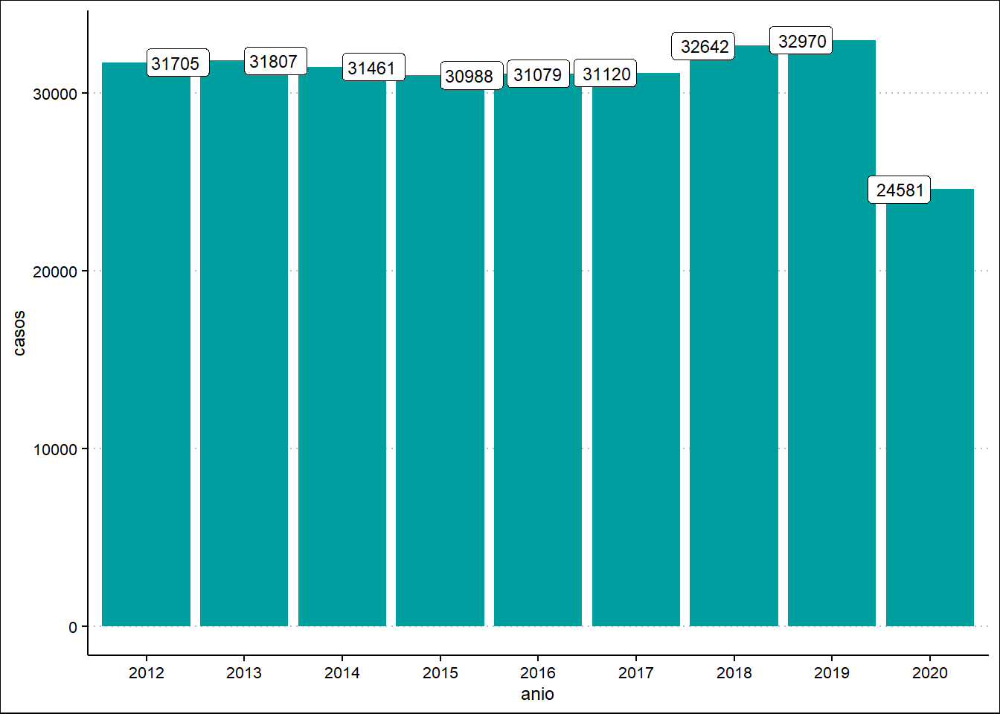
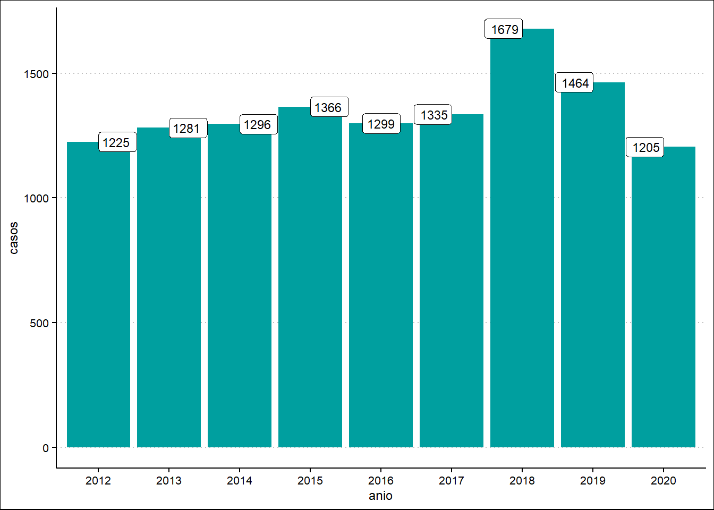
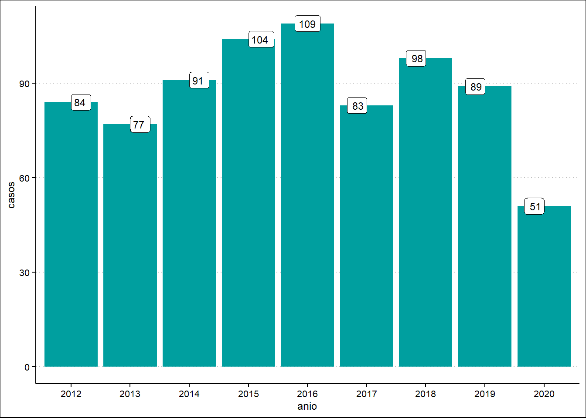

Mostrar código
library(tidyverse)
library(readxl)Kevin Huamani Ochoa
La Tuberculosis (TB) es la segunda causa de muerte por enfermedad infecciosa en el mundo y Perú es el segundo país en el continente americano con mayor incidencia en esta afección, el primero es Haití. La enfermedad puede cultivarse en los ganglios, el tórax, los riñones y otros órganos del cuerpo, pero la más común es la TB pulmonar, que es también la más contagiosa. Las sepas de la TB pueden ser resistentes o no a los medicamentos, esta característica genera que el tratamiento sea más largo, perjudicial y duro para las personas. En el 2019, Brasil y Perú sumaron el 52% de todos los casos registrados de Tuberculosis resistente a los medicamentos en América.
Perú, junto a países como México, Brasil, Colombia y Haití, conforma el grupo de los territorios de alta carga. Por tanto, el llamadao Bacilo de Koch, que desencadena la Tuberculosis, está presente en la mayoría de la población. Los mercados aglomerados y con deficiencias en la ventilación, y el transporte público con las ventanas cerradas son algunos de los espacios donde la comunidad se contagia con el bacilo. Cabe resaltar que no todas las personas que se contagian desarrollan la enfermedad puesto que el sistema inmune es capaz de mantenerlo imactivo. Sin embargo, las condiciones de pobreza, los altos niveles de estrés o ansiedad, la infección con VIH son los principales factores que debilitan la salud y provocan la manifestación de la TB.
En los primeros días de inicio del brote de la enfermedad, la sintomatología puede ser leve, lidiable y hasta confundible con otro tipo de males. Una tos con flema persistente, dolor de espalda o pecho, fiebre y sudor nocturno pueden ser los primeros síntomas que las personas pasan por alto. Sin embargo, expectorar sangre y la pérdida de peso sin razón aparente generan alarma en los afectados y los obliga a acudir a los centros de salud. Entonces, las personas llegan a los hospitales cuando la infección está en un nivel avanzado y los órganos afectados presentan un mayor nivel de compromiso.
Más aún, la pandemia de la Covid-19 ha profundizado las deficiencias en la cobertura de la salud pública y la condujo al colapso. Con ello, la identificación de casos de TB también sufrió afecciones puesto que las personas con algún tipo de síntoma evitaron acercarse a los centros de salud por temos a contraer el virus, no encontraron atención en los establecimiento de primer nivel o confundieron la sintomatología de la TB con la Covid-19.
Bajo este panorama, este trabajo pretende observar la evolución en la identificación de la TB en el país. Por eello, se recurrió a la data oficial proporcionada por la Dirección de Prevención y Control de la Tuberculosis (DPCTB) del Ministerio de Salud del Perú. La base de datos de la DPCTB ofrece cifras detalladas por tipos de TB identificadas, los métodos últizados para detectarlas, edad de las personas diagnósticas, casos nuevos, TB y VIH, entre otras.
Los paquete utlizados fueron tidyverse y readxl que permiten la lectura de la data recopilada en un documento Excell.
library(tidyverse)
library(readxl)Para efectos de este trabajo se tomó tres tipos de datos publicadas por la DPCTB: el total de nuevos casos identificados, el total de casos de TB Multidrogorresistente (TB MDR) y el total de casos de TB Extensamenterresistente (TB XDR). Asimismo, se determinó el periodo 2012 a 2020 para observar la evolución en la identififación de las personas con esta enfermedad. Los datos utilziados para este trabajo pueden ser consultados en el siguiente enlace: http://www.tuberculosis.minsa.gob.pe/DashboardDPCTB/PerfilTB.aspx
El primer grupo de datos, el total de nuevos casos identificados, permite obtener a nivel general una cifra completa de personas identificadas por TB. El segundo, el total de casos de TB MDR permite conocer la cifra de personas afectadas con la cepa resistente a los medicamentos isoniacida o rifampicina. Y por último, el total de casos de TB XDR, arroja la cantidad de personas afectadas por la variante resistente a rifampicina, isoniacida, una fluoroquinolona (levofloxacina o moxifloxacina) y a un antibiótico inyectable de segunda línea (kanamicina, amikacina o capreomicina). De esta manera, del dato general de casos de TB se irá profundizando en las variables y en la evolución de su indentificación.
Los datos seleccionados se extrajeron y se organizaron en un archivo de formato xlsx nombrado data_TBC.
data_TBC <- read_excel("data/data TBC.xlsx")Luego de este proceso, las variables seleccionadas respoderán las siguientes preguntas:
¿Cómo ha sido la evolución en la identificación de casos de Tuberculosis en el periodo 2012 - 2020? - ¿Cómo ha sido la evolución de los casos identificados de Tuberculosis Multidrogorresistente (TB MDR) en el perido 2012 - 2020? - ¿Cómo ha sido la evolución de los casos identificados de Tuberculosis Extensamenterresistente (TB XDR) en el periodo 2012 - 2020?
Para el tratamiento de los datos, se creó a función denominada generar_tabla. La función filtra cada tipo de caso y lo convierte en un gráfico de columnas en la que los años están representados en el eje X y los casos de ese tipo en el eje Y.
generar_tabla <- function(tipo_datos) {
data_TBC %>%
filter(`Datos estadísticos` == tipo_datos) %>%
pivot_longer(`2012`:`2020`, names_to = "anio", values_to = "casos") %>%
ggplot(aes(x = anio, y = casos)) +
geom_col() +
geom_label(aes(label = casos))
}Total de casos de TB identificados
generar_tabla("Total de casos identificados de Tuberculosis")
El gráfico de barras N°1 presenta el total de casos de TB identificados por año desde el 2012 al 2020. Las cifras engloban todos los tipos de TB y si son de carácter pulmonar o extrapulmonar. El gráfico permite observar la evolución total en la identificación de las personas afectadas. Del 2012 al 2019 el registro de la TB superaba los 30 mil diagnósticos, donde el 2019 fue el año con más casos identificados con un total de 32970 y el 2015 con 30988 .Sin embargo, la situación es completamente diferente en el año 2020 donde solo fueron identificados 24581 casos; una cifra que desentona con los datos de los años precedentes.
Total de casos de Tuberculosis Multidrogorresistente (TB MDR)
generar_tabla("Total de casos de Tuberculosis Multidrogorresistente (TB MDR)")
El gráfico N°2 muestra el total de casos identificados de TB MDR y se aprecia que del 2012 al 2015 hubo un crecimiento consecutivo en la cantidad total de casos. Sin embargo, al año siguiente la cifra cae a niveles semejantes al 2014 y en el 2017 se recupera pero sin alcanzar la el dato del 2015. Sorpresivamente, en el año 2018 los casos de TB MDR alcanzan los 1679, dejando por muy debajo al año 2015 donde la cifra fue de 1366. No obstante, en el 2019 el total de casos se reduce, una vez más, en comparación al año anterior y alcanzando el total de 1464. Más aún, en el 2020 la cantidad de casos identificados sufre una nueva caída al registrar 1205 personas afectadas con esta cepa resistente a la medicación.
Total de casos de Tuberculosis Extensamenterresistente (TB XDR)
generar_tabla("Tuberculosis Extensamenterresistente (TB XDR)")
El gráfico N°3 organiza el total de casos identificados de TB XDR. Si en el gráfico N°1 se apreciaba una ligera variación en las cifras y en el gráfico N°2 una mayor disparidad, en este gráfico N°3 la diversidad es aún mayor; las cifras de TB XDR son volátiles cada año. El 2016 fue el año donde se registró la mayor cantidad de esta cepa mientras que en el 2020 se identificó la menor cantidad.
Entre los años 2012 a 2020 las cifras demuestran que la identificación de las personas afectadas con la TB es volátil y presenta cambios, en algunos casos bruscos, de un año a otro. Este nivel de variación se va tornando más evidente cuando se tránsita de lo general a lo particular. Es decir, en las cifras de TB MDR y XDR es donde este fenómeno es más explícito. Por tal motivo, a simple vista, luego de ver las cifras, no se puede concluir que la reducción de casos identificados signifique una mejoría de la salud pública y que el combate de la TB está siendo efectivo. Al contrario, la diferencia en el total de la identificación de un año a otro podríaa representar una población afectada por la TB queno está siendo diagnósticada a tiempo y que, en consecuencia, no reciben la atención oportuna en medicamentos, alimentación y asistencia psicológica para derrotar a la enfermedad.
Por otro lado, la situación más dramática en la identificación de la TB se aprecia en el año 2020. Durante aquel año el país y el mundo ingresaron a un estado de emergencia debido a la pandemia de la Covid-19 y las cifras de detección de la TB cayeron estrepitosamente hasta niveles nunca antes vistos, por lo menos entre el 2012 al 2019. Tanto en la data total de casos de TB, como en la TB MDR y TB XDR, los casos registrados arrojan resultados inferiores a los años precedentes. Esta falencia, a causa del colapso del sistema de salud público, revela que un importante número de personas afectadas con la TB no ha sido identificada y no ha recibido el tratamiento oportuno. Por tanto, si bien el uso de la mascarilla es generalizada en estos tiempos, su efectividad para ser una barrera ante el bacilo de Koch depende del uso correcto, la proyección de naríz y boca, el material de fabricación y el tipo. Por ejmeplo, el efecto de una mascarilla N95 no es el mismo que de una quirúrgica o la confeccionada de manera doméstica.
En ese sentido, en el contexto de la pandemia, el aumento del desempleo, la pobreza y los problemas de estrés y ansiedad, además de las fallas estrucutrales en temas de vivienda digna y alimentación, han confluído y preparado el terreno óptimo para el brote de la TB. Por tanto, es posible que en las próximas actualizaciones del total de casos, la cifra muestre un aumento en comparación a los años anteriores.
A partir del 2019, según datos del portal de transparencia del Ministerio de Economía y Finanzas, el presupuesto a nivel nacional destinado a la TB ha disminuído. En el 2019 el monto era de más de 299 millones de soles, en los años 2020 y 2021 se redujo a menos de 245 millones y en el 2022 eñl presupuesto es de solo 193 734 649 millones; una cifra muy inferior a los años anteriores más aún con el contexto de deficiencias de identificación debido a la situación sanitaria. Sin duda hace falta un esfuerzo institucional y articulado para alcanzar los nivles de detección previos a la pandemia. Repetir y reportenciar las acciones que fueron empleadas en aquellos años donde más casos se detectaron son necesarias para conocer realmente el impacto de esta enfermedad en la población y lograr que el tratamiento llegue a tiempo a los afectados.
Sala situacional de la TB en el Perú de la DPCTB: http://www.tuberculosis.minsa.gob.pe/DashboardDPCTB/Dashboard.aspx
Organización Panamericana de la Salud: https://www3.paho.org/per/index.php?option=com_content&view=article&id=4075:tuberculosis&Itemid=0
Portal de transparencia del Ministerio de Economía y Finanzas: https://apps5.mineco.gob.pe/transparencia/Navegador/default.aspx?y=2021&ap=ActProy